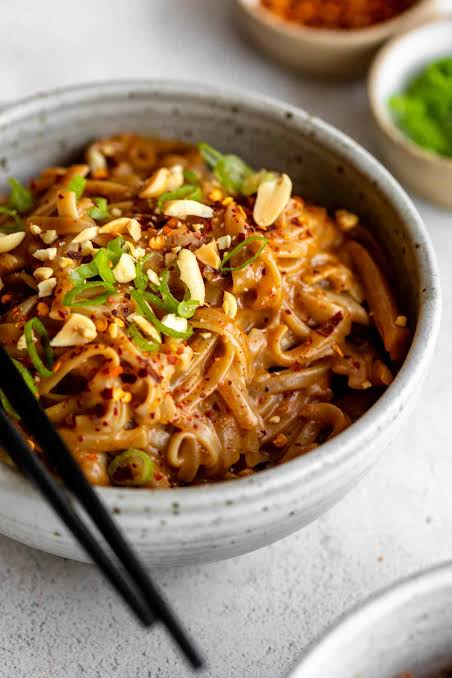

Peanut Noodles Recipe

Description
This peanut noodles recipe is a delicious and easy-to-make dish that combines the rich flavor of peanut
butter with the freshness of vegetables.
Perfect for a quick weeknight dinner or a light lunch, this recipe is sure to satisfy your taste buds.
Ingredients
- 200g ramen noodles
- 2 tablespoons peanut butter
- 2 tablespoons soy sauce
- 1 tablespoon rice vinegar
- 1 teaspoon sugar
- 1 clove garlic, minced
- 1 tablespoon grated fresh ginger
Steps
- Cook the ramen noodles according to the package instructions. Drain and set aside.
- In a large skillet, heat the peanut butter over medium heat. Add the soy sauce, rice vinegar, and sugar. Stir well and let it simmer for 5-10 minutes, allowing the flavors to meld together.
- Add the minced garlic and grated ginger to the skillet. Stir well and let it cook for another 2-3 minutes until fragrant.
- Add the cooked noodles to the skillet and toss it with the sauce until well coated.
- Grated Parmesan cheese for serving
Home